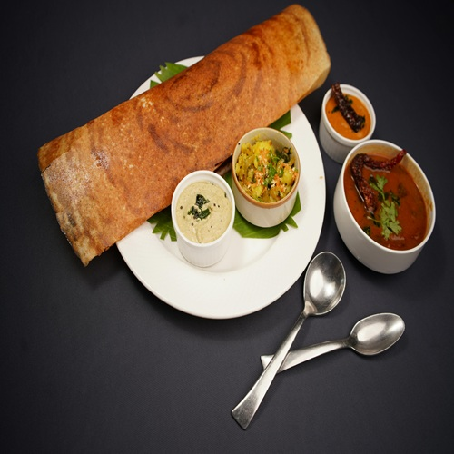
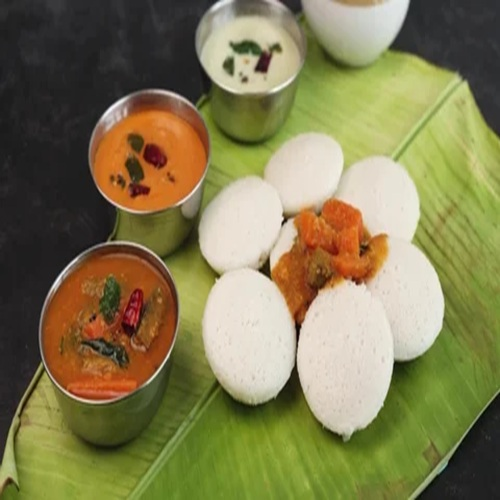

Dosa
Dosa is a thin, crispy pancake made from fermented rice and lentil batter. It is commonly eaten for breakfast or dinner. Popular varieties include plain dosa, masala dosa, rava dosa, and paper dosa.
Idli
Idli is a soft, steamed cake made from fermented rice and lentil batter. It is light and healthy, usually served with chutney and sambar. Varieties include rava idli, mini idli, and idli upma.
